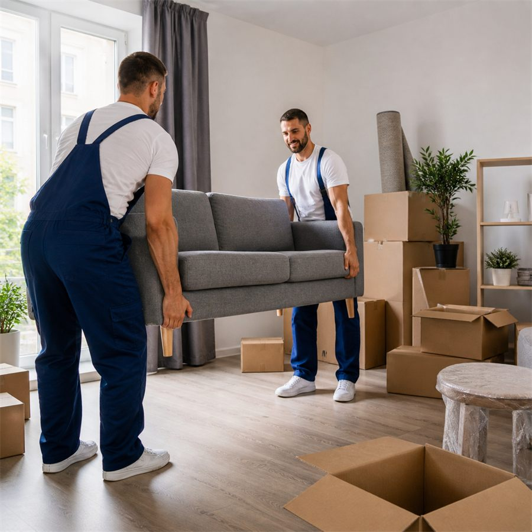
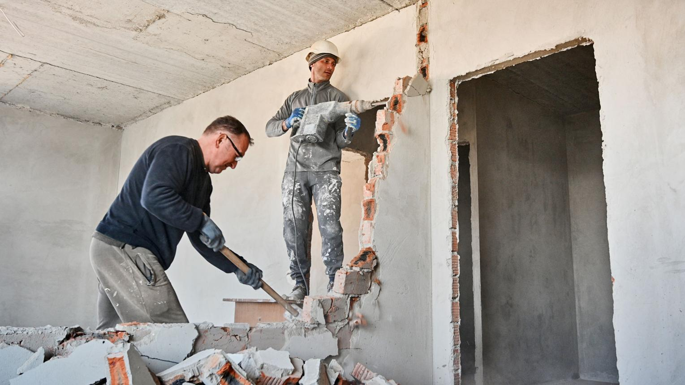
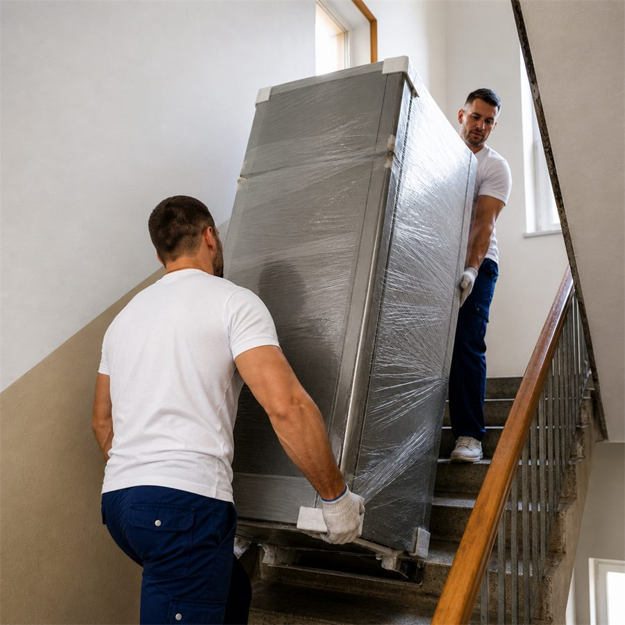
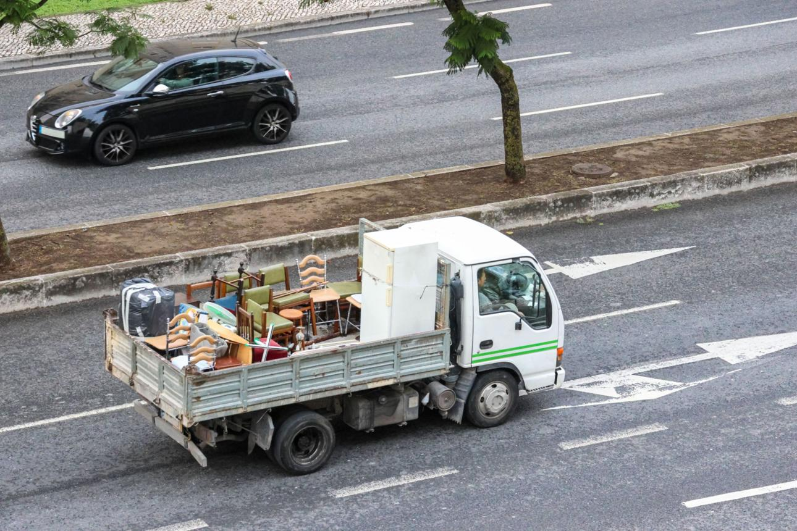
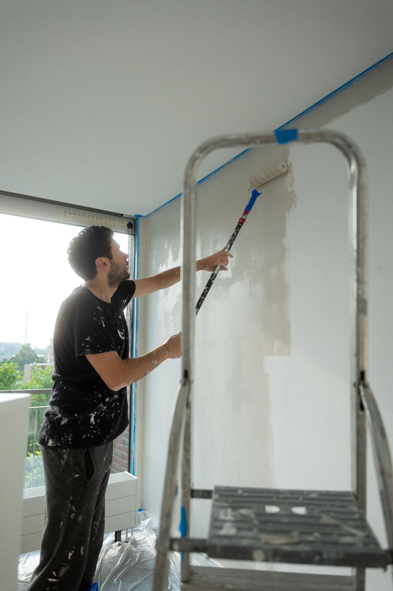

Преместване на апартаменти
Помагаме при преместване на мебели, техника и лични вещи бързо, внимателно и организирано.
Работим в Благоевград, София, Сандански, Петрич, Дупница и Перник.
Телефон за връзка 0899 942 785
Помагаме при преместване на мебели, техника и лични вещи бързо, внимателно и организирано.

Изнасяне и преместване на офис оборудване, бюра, шкафове и техника с добра организация и точност.

Изнасяме и извозваме ненужни мебели, тежки предмети и обемни отпадъци без излишно губене на време.

Разчистваме затрупани помещения, изнасяме боклуци и подреждаме пространството според нуждите.

Сваляне, разглобяване и преместване на мебели, секции и други обемни елементи при нужда.

Качване и сваляне на тежки мебели, техника и багаж до етаж, дори когато няма асансьор.

Разполагаме с подходящ транспорт за преместване на обемни мебели, багаж и различни товари.

Поемаме и нестандартни задачи според обекта - разчистване, товарене, подреждане и обща помощ.
Извършваме преместване на апартаменти и офиси, извозване на стари мебели, транспорт с бус, почистване на мазета и качване до етаж според конкретния обект и града.
Работим за преместване на мебели, пренасяне на техника, извозване на стари мебели и транспорт с бус в Благоевград и околните квартали.
Поемаме преместване на апартаменти и офиси в София, както и товарене, разтоварване и пренасяне на тежки мебели до етаж.
За Сандански предлагаме транспорт с бус, преместване на мебели, почистване на мазета и извозване на обемни вещи след ремонт или разчистване.
Извършваме хамалски услуги в Петрич за домове, офиси, складове и търговски обекти с бърза организация и ясен контакт по телефона.
В Дупница предлагаме преместване, изнасяне на мебели, демонтаж и монтаж, както и транспорт за по-обемни товари и личен багаж.
Работим и в Перник при преместване на апартаменти, качване и сваляне до етаж, извозване на мебели и разчистване на помещения.
Ако търсите хамалски услуги в Благоевград, София, Сандански, Петрич, Дупница или Перник, можете да се свържете с нас за оглед, преценка и точна оферта според обема на работа.
Работим бързо, коректно и според конкретния обект, защото всяка работа е различна и изисква точна преценка.
Тук сме събрали най-честите въпроси при преместване на мебели, транспорт с бус и извозване на стари мебели.
Да. Поемаме преместване на апартаменти, офиси, мебели, техника, кашони и лични вещи с организация според етажа, достъпа и обема.
Да. Изнасяме и извозваме стари мебели, тежки предмети и ненужни вещи, когато обектът трябва да бъде разчистен бързо и подредено.
Да. Качваме и сваляме мебели, техника и багаж до етаж, включително при тесни стълбища и сгради без асансьор.
Да. Освен в Благоевград работим в София, Сандански, Петрич, Дупница и Перник, като транспортните разходи се уточняват според разстоянието.
Цената зависи от обема на работата, броя хамали и необходимия транспорт. Предлагаме безплатен оглед и точна оферта без ангажимент. Обадете се на 0899 942 785.
Започваме с контакт, правим оглед и даваме точна оферта според мястото, обема и необходимия транспорт.
За обекти извън града се начисляват транспортни разходи според разстоянието и обема на работа.
По телефон за бърза преценка и уточняване на обекта.
Оценяваме обема, достъпа и точната организация.
Ясна цена според конкретната задача и транспорт.
Бързо, внимателно и коректно до края на обекта.